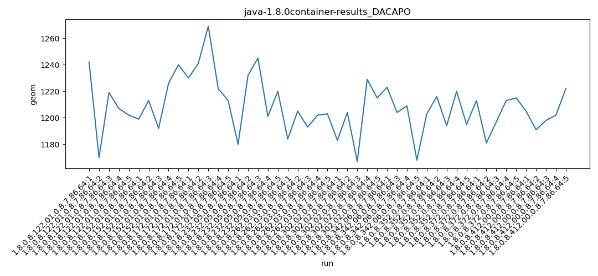
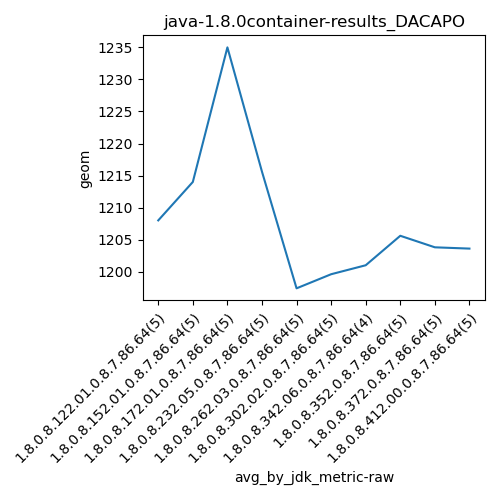
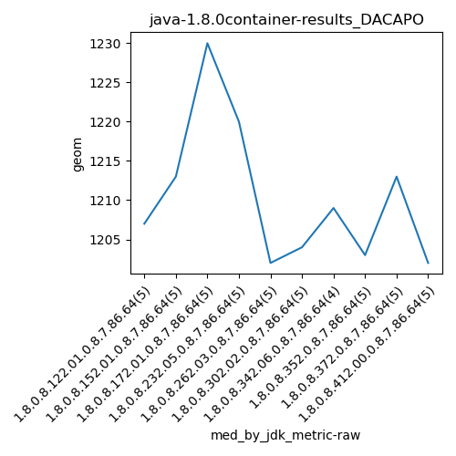
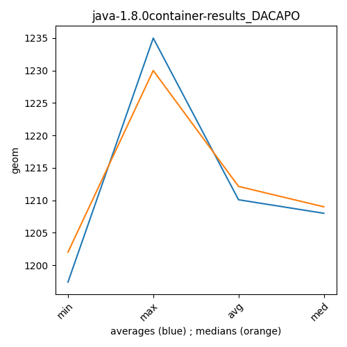

java-1.8.0 DACAPO
Context at bottom
/home/jvanek/git/benchmarks-in-nested-virtualisation-toolchain/final_results/container_results/container-results_J2DBENCH
java-1.8.0
DACAPO
/home/jvanek/git/benchmarks-in-nested-virtualisation-toolchain/final_results/container_results/container-results_RADARGUNs3
java-1.8.0
DACAPO
/home/jvanek/git/benchmarks-in-nested-virtualisation-toolchain/final_results/container_results/container-results_RADARGUNs1
java-1.8.0
DACAPO
/home/jvanek/git/benchmarks-in-nested-virtualisation-toolchain/final_results/container_results/container-results_DACAPO
java-1.8.0
DACAPO
container-results_DACAPO
final score
Expected number of java-1.8.0 JDKs: 10
1st avgmed_alljdks_metric:
/home/jvanek/git/benchmarks-in-nested-virtualisation-toolchain/final_results/result_processing.py /home/jvanek/git/benchmarks-in-nested-virtualisation-toolchain/final_results/container_results/container-results_DACAPO geom False
values: [1242, 1170, 1219, 1207, 1202, 1199, 1213, 1192, 1226, 1240, 1230, 1241, 1269, 1222, 1213, 1180, 1232, 1245, 1201, 1220, 1184, 1205, 1193, 1202, 1203, 1183, 1204, 1167, 1229, 1215, 1223, 1204, 1209, 1168, 1203, 1216, 1194, 1220, 1195, 1213, 1181, 1197, 1213, 1215, 1205, 1191, 1198, 1202, 1222]

Expected number of iterations: 5
final number of values: 49 out of 50
Pass rate: 98.0%
values: (1167, 1269, 1208.5102040816328, 1205)

** accuracy from all jdks and runs
more is better
MIN: 1167
MAX: 1269
AVG: 1208.5102040816328
MED: 1205
Relative differences 1:
MIN-MAX: 8.0 %
MIN-AVG: 3.0 %
MIN-MED: 3.0 %
MAX-MIN: -9.0 %
MAX-AVG: -5.0 %
MAX-MED: -5.0 %
AVG-MED: -0.0 %
stored to java-1.8.0.properties. sort | uniq that!
2nd avgmed_by_jdk_metric:
values: [1208.0, 1214.0, 1235.0, 1215.6, 1197.4, 1199.6, 1201.0, 1205.6, 1203.8, 1203.6]

values: [1207, 1213, 1230, 1220, 1202, 1204, 1209, 1203, 1213, 1202]

values: (1197.4, 1235.0, 1208.3600000000001, 1205.6)
values: (1202, 1230, 1210.3, 1209)

** accuracy from all jdks where runs were avged
more is better
MIN: 1197.4
MAX: 1235.0
AVG: 1208.3600000000001
MED: 1205.6
Relative differences 1:
MIN-MAX: 3.0 %
MIN-AVG: 1.0 %
MIN-MED: 1.0 %
MAX-MIN: -3.0 %
MAX-AVG: -2.0 %
MAX-MED: -2.0 %
AVG-MED: -0.0 %
stored to java-1.8.0.properties. sort | uniq that!
** accuracy from all jdks where runs were medianed
more is better
MIN: 1202
MAX: 1230
AVG: 1210.3
MED: 1209
Relative differences 1:
MIN-MAX: 2.0 %
MIN-AVG: 1.0 %
MIN-MED: 1.0 %
MAX-MIN: -2.0 %
MAX-AVG: -2.0 %
MAX-MED: -2.0 %
AVG-MED: -0.0 %
stored to java-1.8.0.properties. sort | uniq that!
/home/jvanek/git/benchmarks-in-nested-virtualisation-toolchain/final_results/container_results/container-results_SPECJBB
java-1.8.0
DACAPO
/home/jvanek/git/benchmarks-in-nested-virtualisation-toolchain/final_results/container_results/container-results_JMH
java-1.8.0
DACAPO
pass rates:
container-results_DACAPO=98.0%
Context:
- container_results
- DACAPO